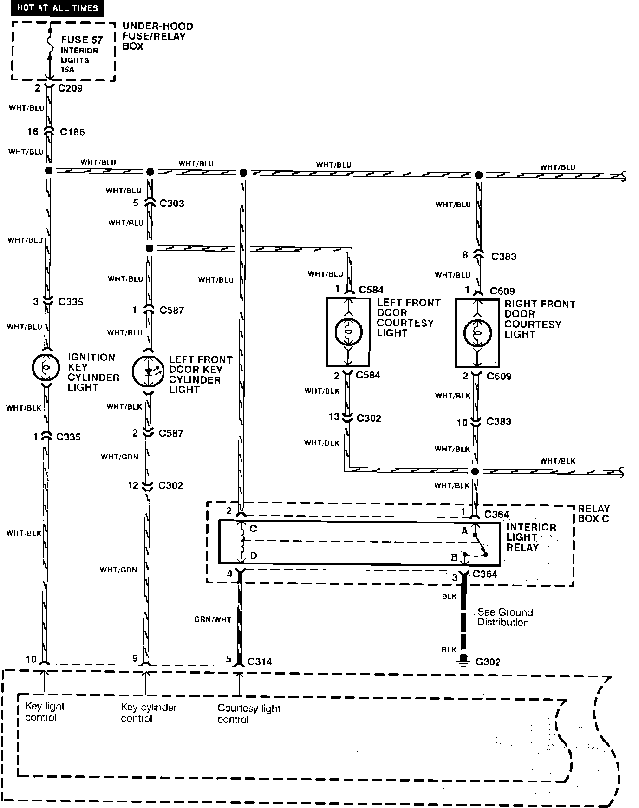
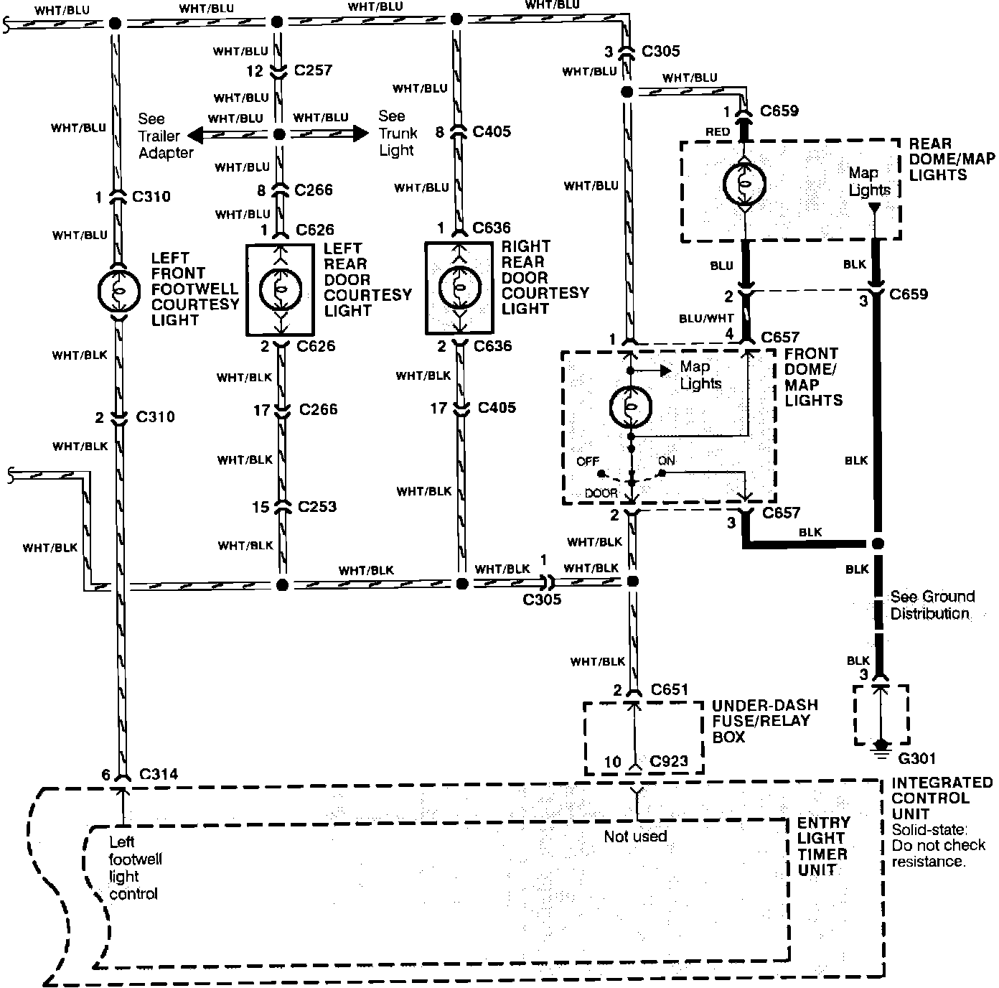

Operation CHARM
: Car repair manuals for everyone.
Home
>>
Acura
>>
1991
>>
Legend Sedan V6-3206cc 3.2L SOHC FI
>>
Repair and Diagnosis
>>
Lighting and Horns
>>
Relays and Modules - Lighting and Horns
>>
Interior Lighting Module
>>
Diagrams
>>
Electrical Diagrams
>>
Entry Light Timer System
>>
L Models
>>
Part 2 of 2
Part 2 of 2
Entry Light Timer System (Std And L Models):

Entry Light Timer System (Std And L Models):
